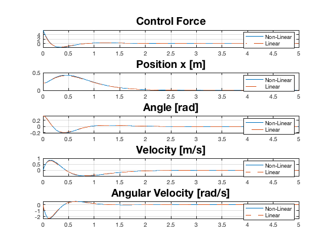

Contents
clear all;
parameters
m=0.15;
Mc=0.4;
l=0.2;
g=9.81;
matrices xa
Aa=[0,0,1,0;0,0,0,1;0,-m*g/Mc,0,0;0,g*(Mc+m)/(l*Mc),0,0];
Ba=[0;0;1/Mc;-1/(l*Mc)];
Ca=eye(4);
Da=zeros(4,1);
controllability
C_AaBa=ctrb(Aa,Ba);
Rank =rank(C_AaBa);
if Rank == min(size(C_AaBa))
disp('the linearised model is controllable')
end
the linearised model is controllable
compute the controller
Pa=[-3 -4 -5 -6];
Ka=place(Aa,Ba,Pa);
K_SF=Ka;
simulation
x10=0.2;
x20=deg2rad(20);
x30=0;
x40=0;
x2_bar=0;
sim('CP_SFC_Lin_a_n9558292.slx')
sim('CP_SFC_NLin_n9558292.slx')
plot
figure
subplot(5,1,1)
plot(tout_NL,F_NL,ta,Fa,'--')
title('Control Force','FontSize',18)
legend('Non-Linear','Linear')
grid on
subplot(5,1,2)
plot(tout_NL,x1,ta,x1a,'--')
legend('Non-Linear','Linear')
title('Position x [m]','FontSize',18)
grid on
subplot(5,1,3)
plot(tout_NL,x2,ta,x2a,'--')
legend('Non-Linear','Linear')
title('Angle [rad]','FontSize',18)
grid on
subplot(5,1,4)
plot(tout_NL,x3,ta,x3a,'--')
legend('Non-Linear','Linear')
title('Velocity [m/s]','FontSize',18)
grid on
subplot(5,1,5)
plot(tout_NL,x4,ta,x4a,'--')
legend('Non-Linear','Linear')
title('Angular Velocity [rad/s]','FontSize',18)
grid on

animation linear
Cart_Pendulum_Animation(tout,x1a,x2a,0,0)
Animation started
Dot indexing is not supported for variables of this type.
Error in alternateGetframe
Error in getframe (line 133)
x = alternateGetframe(parentFig, offsetRect, scaledOffsetRect, includeDecorations);
Error in Cart_Pendulum_Animation (line 140)
mov(k) = getframe(gcf);
Error in CP_SFC_Lin_a_MainFile_n9558292 (line 67)
Cart_Pendulum_Animation(tout,x1a,x2a,0,0)
animation non linear
Cart_Pendulum_Animation(tout,x1,x2,0,0)